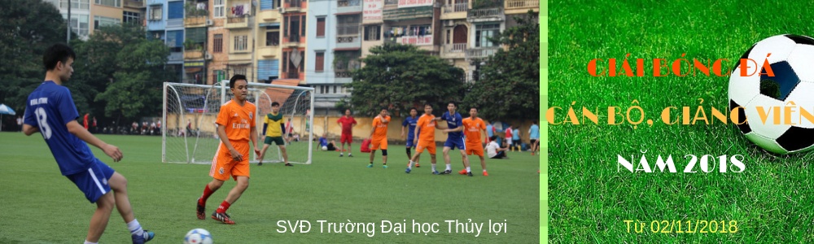

Tuyên truyền, phổ biến pháp luật về lĩnh vực Thủy lợi
TLU) – Chiều ngày 13/11, tại Hội trường T45, Trường Đại học Thủy lợi tổ chức hội nghị tuyên truyền, phổ biến pháp luật về lĩnh vực Thủy lợi và kiến thức ứng phó thiên tai, thích ứng với biến đổi khí hậu.
Hội nghị có sự tham dự của GS. TS Nguyễn Văn Tỉnh – Tổng cục trưởng Tổng cục Thủy lợi; Ông Nguyễn Hồng Khanh – Cục trưởng Cục quản lý công trình – Tổng cục Thủy lợi; Ông Bùi Quang Huy – Phó giám đốc Trung tâm Chính sách và kỹ thuật phòng chống thiên tai – Tổng cục Phòng chống thiên tai.

Về phía Trường Đại học Thủy lợi có GS. TS Trịnh Minh Thụ - Hiệu trưởng; đại diện Ban giám hiệu; cán bộ, giảng viên, sinh viên Khoa Công trình, Khoa Kỹ thuật tài nguyên nước, Khoa Thủy văn và Tài nguyên nước, Khoa Môi trường; cán bộ Viện Kỹ thuật công trình, Viện Kỹ thuật Tài nguyên nước.